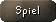
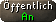
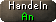
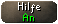

")
Chat
Einführung
Der Chat ist in RuneScape ein wichtiger Teil des Spiels. Ihr werdet bemerken, dass es viele verschiedene Arten gibt, mit euren Freunden in Kontakt zu bleiben, zu handeln oder mit anderen Spielern zu interagieren. Mit dem Chatten könnt ihr loslegen, indem ihr einfach in das Chatfenster tippt oder den Direktchat benutzt.
Im Chatfenster, das sich unter dem Spielfenster befindet, seht ihr die Nachrichten von anderen Spielern. Wenn ihr euch aber in einer Gegend befindet, in der viel los ist, ist es nützlich, eure Chatoptionen (also wie euch der Chat angezeigt wird) zu verändern.

Auf die ersten sieben dieser Schaltflächen könnt ihr linksklicken, damit das Chatfenster nur diese Art von Informationen/Chat anzeigt, und ihr könnt auf sie rechtsklicken, um eine Liste der vorhandenen Optionen zu sehen.
Die Schaltfläche 'Regelverstoß melden' ist eure Möglichkeit, uns bei Jagex über diejenigen Spieler zu informieren, die sich danebenbenehmen oder gegen eine RuneScape-Regel verstoßen.
Die Option 'Alle' ist standardmäßig eingestellt, wenn ihr eine andere Chat-Schaltfläche auswählt, ändert er sich und zeigt an, welchen Chat ihr gerade lest. Falls ihr einen anderen Chat erhaltet, fängt die Schaltfläche an, blau zu leuchten. Falls ihr also den Clanchat lest und eine private Nachricht erhaltet, wird die Schaltfläche 'Privat' blau leuchten.
Wenn ihr einen Chatfilter ausschaltet (mit der rechten Maustaste), dann blinkt die Schaltfläche nicht mehr blau und alle Chats dieser Art werden versteckt.
 |
Alle: Wenn ihr den 'Alle'-Filter aktiviert, seht ihr alle Chats in diesem Fenster. |
|  | Spiel: Wenn ihr 'Spiel' auswählt, werden euch nur Informationen zum Spiel angezeigt und überhaupt kein Chat - egal, was für andere Einstellungen ihr gewählt habt. Per Rechtsklick darauf und Auswahl von Filtern können Spielnachrichten, die sich oft wiederholen, aus dem Chatfenster entfernt werden. Durch Auswahl von Alle können diese Nachrichten wieder angezeigt werden. |
|  | Öffentlich: Wenn ihr auf diese Schaltfläche linksklickt, wird euch nur öffentlicher Chat im Chatfenster angezeigt. Ihr werdet dann beispielsweise keinen Clanchat sehen. Indem ihr auf diese Schaltfläche rechtsklickt, bestimmt ihr, wie viel Chat von anderen Spielern in eurem Chatfenster angezeigt wird. Ihr könnt zwischen An, Freunde, Aus und Verstecken wählen. Wenn ihr An eingestellt habt, seht ihr alle Gespräche, die die Leute um euch herum führen - egal, ob sie mit euch oder miteinander reden. Habt ihr die Option Freunde ausgewählt, werden euch im Chatfenster nur die Zeilen angezeigt, die ihr oder eure Freunde schreiben. Versteckt bedeutet, dass die Gespräche der Mitspieler zwar im Spielfenster über deren Kopf angezeigt werden, aber nicht im Chatfenster. Habt ihr den Chat auf Aus gestellt, erscheint keinerlei Chat. |
 |
Privat: Wenn ihr auf diese Schaltfläche linksklickt, werden euch nur private Nachrichten im Chatfenster angezeigt. Diese Einstellung bestimmt, ob euch andere Spieler über private Nachrichten kontaktieren können. Bei An kann euch jeder private Nachrichten schreiben, auch Leute, die nicht auf eurer Freunde-Liste stehen. Habt ihr Freunde ausgewählt, können euch nur Spieler auf eurer Freunde-Liste anschreiben. Aus bedeutet, ihr erhaltet keinerlei private Nachrichten. Diese Schaltfläche steuert auch, wie anderen Spielern euer Online-Status angezeigt wird. Alle, die euch eine Mitteilung schicken können, werden auch sehen, ob ihr gerade spielt oder nicht. Wichtig: Jagex-Mitarbeiter werden euch immer Mitteilungen schicken können, egal welche Optionen ihr eingestellt habt. Ihr könnt sie an der goldenen Krone am Anfang ihrer Mitteilung erkennen. |
 |
Clan: Wenn ihr auf diese Schaltfläche linksklickt, zeigt das Chatfenster nur Nachrichten aus dem Chatraum an, in dem ihr euch befindet. Wenn ihr auf sie rechtsklickt, könnt ihr einstellen, ob die Gespräche in dem Chatraum, den ihr betreten habt, angezeigt werden sollen. Ihr könnt auch auswählen, von welchen Mitgliedern des Clanchats ihr Nachrichten sehen wollt. Es gibt drei Optionen: An, Freunde oder Aus. |
|  | Handeln: Ihr könnt auf diese Schaltfläche linksklicken, sodass euch im Chatfenster nur Handelsangebote, Herausforderungen etc. angezeigt werden. Wenn ihr auf diese Schaltfläche rechtsklickt, könnt ihr bestimmen, ob Mitspieler euch Handelsangebote schicken oder euch zu Duellen und anderen Spielen herausfordern dürfen. Es gibt drei Optionen: An, Freunde oder Aus. |
|  | Mentor: Ihr könnt auf diese Schaltfläche linksklicken, sodass euch im Chatfenster nur Mentoren-Gesuche angezeigt werden. Wenn ihr auf diese Schaltfläche rechtsklickt, könnt ihr bestimmen, ob Mitspieler euch Mentoren-Gesuche schicken dürfen. Es gibt drei Optionen: An, Freunde oder Aus. |
 |
Regelverstoß melden
Die Schaltfläche 'Regelverstoß melden' ist eure Möglichkeit, uns bei Jagex über diejenigen Spieler zu informieren, die sich danebenbenehmen oder gegen die RuneScape-Regeln verstoßen. Wenn ihr ausfälliges Verhalten oder Beschimpfungen mitbekommt, solltet ihr 'Regelverstoß melden' anklicken, dann den Namen des Spielers aus der Liste auswählen und schließlich im nächsten Schritt auswählen, gegen welche der RuneScape-Regeln er oder sie verstoßen hat. Weitere Informationen dazu findet ihr hier. Wir werden euren Regelverstoß-Bericht erhalten und sofort Maßnahmen gegen den betreffenden Spieler einleiten. Sollten wir allerdings herausfinden, dass ihr dieses System missbraucht, werden wir stattdessen gegen euch vorgehen. |
Direktchat
Der Direktchat macht es möglich, in verschiedenen Situationen schnell und effizient mit anderen zu kommunizieren. Den Standard-Direktchat könnt ihr benutzen, indem ihr die Eingabetaste auf eurer Tastatur drückt oder indem ihr auf das Direktchat-Symbol neben eurem Namen am unteren Ende des Chatfensters klickt.
- Clan-Direktchat: Um den Clan-Direktchat zu benutzen, rechtsklickt auf das Direktchat-Symbol und wählt dann 'Clan-Direktchat' aus oder tippt einen Schrägstrich ("/") ein und drückt dann die Eingabetaste.
- Privater Direktchat: Um den privaten Direktchat zu benutzen, rechtsklickt einen Namen in eurer Freunde-Liste und wählt 'Direktchat' aus.
Wenn ihr den Direktchat ausgewählt habt, wird sich euer Chatfenster verändern, sodass ihr eine Auswahl von Chatkategorien seht, die in weitere Optionen unterteilt sind:

|

|
Um eure Nachricht zu bilden, müsst ihr die Unterkategorien öffnen, indem ihr auf die Überschriften klickt. Die Tabelle zeigt euch dann ein paar grundlegende Optionen und Unterkategorien. Außerdem wird eine Beschreibung des entsprechenden Abschnitts angezeigt.
| Direktchat-Option | Unterteilungen | Erklärung | |
| Generelles | Antworten Hallo Auf Wiedersehen Kommentare Stimmung Smilies Bemerkung Komplimente Hilfe Wegbeschreibungen Aktivitäten |
Generelles umfasst Dinge wie Begrüßungen, Komplimente, Bitten um Hilfe und Schnell-Antworten auf einfache Fragen. |
|
| Handel/Gegenstände | Handel Gegenstände |
Handel/Gegenstände umfasst Bitten um und Informationen zu Handel und Gegenständen. |
|
| Fertigkeiten | Alle Fertigkeiten sind weiter unterteilt |
Fertigkeiten umfasst alle üblichen Fragen oder Kommentare zu Fertigkeiten in RuneScape. |
|
| Gruppenunternehmungen | Organisation Kampf in einer Gruppe Kampfbasierte Minispiele Spaßige Unternehmungen Abenteuer Fertigkeitenbasierte Minispiele Füg mich hinzu |
Den Chat der Kategorie 'Gruppenunternehmungen' kann man dazu benutzen, um Ausflüge zu Minispielen, dem Partyraum und so weiter zu organisieren. Außerdem kann man um Hilfe bei anderen Unternehmungen bitten, bei denen man Unterstützung braucht. |
|
| Clans | Fragen Antworten Vorbereitung |
Mithilfe des Abschnitts 'Clans' könnt ihr Ereignisse für euren Clan schnell organisieren oder mit anderen Leuten über euren Clan reden. |
|
| Zwischen den Spielen | FunOrb RuneScape |
Den Chat 'zwischen den Spielen' könnt ihr benutzen, um den Kontakt zu Freunden zu halten, die gerade FunOrb spielen. Oder ihr könnt organisieren, gemeinsam ein Minispiel zu spielen oder eure Fertigkeiten zusammen zu trainieren. |
|
| Inhaltsrelevanz | Die weiteren Unterteilungen hängen davon ab, wo ihr gerade seid. |
Inhaltsrelevanter Chat hängt von eurem Aufenthaltsort ab oder von der Fertigkeit, die ihr gerade trainiert habt. Ihr werdet bemerken, dass er sich oft ändert, je nachdem, was ihr gerade macht. Mithilfe dieses Chats könnt ihr alle Themen diskutieren, die zu euren momentanen Aktivitäten passen. |
Die ersten sechs Optionen bleiben immer gleich, die siebte hängt davon ab, wo ihr euch gerade befindet oder welche Fertigkeit ihr zuletzt trainiert habt. Wenn ihr beispielsweise ein Minispiel spielt, werdet ihr Direktchat-Optionen erhalten, die für dieses Minispiel hilfreich sind. Die normale Voreinstellung ist 'Angriff'.
Jede dieser Kategorien kann ausgewählt werden, indem man auf sie klickt oder indem man den dazugehörigen Buchstaben tippt. Wenn man etwas Generelles sagen will, also beispielsweise jemanden begrüßen möchte, würde man 'G' drücken.
Für jede dieser Kategorien gibt es weitere Unterkategorien, mit denen ihr näher bestimmen könnt, was ihr sagen möchtet. Ihr könnt weiterhin auf die Optionen klicken oder die jeweiligen Tasten benutzen.
Direktchat-Tastenkürzel
| Eingabetaste | Öffnet Direktchat | |
| Rücktaste | Kehrt zur letzten Auswahlliste zurück | |
| Pos 1 | Kehrt zum Anfang des Direktchat-Menüs zurück | |
| Bild hoch / Bild runter | Scrollt durch die Optionen | |
| F9 | Öffnet eine Liste der Schnellantworten zu anderen Direktchat-Phrasen oder -Fragen | |
| F10 | Öffnet das inhaltsrelevante Menü | |
| F11 | Wiederholt die letzte Direktchat-Phrase | |
| Escape | Schließt den Direktchat | |
| / dann Eingabe | Öffnet Clan-Direktchat |
Um euch zu helfen, die benötigte Phrase zu finden, haben wir eine Suchoption in das Direktchat-Menü eingebaut. Um diese zu nutzen, öffnet das Direktchat-Menü, klickt auf 'Suchen' oder drückt Eingabe und fangt an zu tippen. Wenn das Wort, das ihr tippt, im Direktchat vorhanden ist, werden euch die Phrasen angezeigt, die eurer gewünschten Phrase am meisten ähneln. Dann könnt ihr einen Satz aus der Liste auswählen.
Für die folgenden Gegenden gibt es spezielle Chatoptionen, wenn ihr euch vor Ort befindet:
- Angriffsarena der Barbaren
- Der Hochofen
- Burgenkampf
- Clankämpfe
- Duell-Arena
- Der Trawler
- Faust des Guthix
- Spielezimmer
- Gnomball
- Verlies der Götterkriege
- Das große Rumkugeln / Gilde der Runenfertiger
- Verlies der Kalphiten
- Maulwurfsloch
- Partyraum
- Der Kammerjäger
- Spielerhäuser
- Schatten über Mort'ton
- Feuriger Rum
- Kampfgruben der TzHaar
- Verlies auf der Waterbirth-Insel
Bitte beachtet: Wenn ihr mit eurem Spielkonto nur Direktchat nutzen könnt, bis ihr das entsprechende Alter erreicht habt, könnt ihr nicht sehen, was andere Spieler sagen - es sei denn, sie benutzen auch Direktchat.

Weitere Artikel in Steuerung
|
|
|
Weiterführende Informationen Wenn euch dieser Artikel nicht weitergeholfen hat, könnt ihr in den folgenden Kapiteln der RuneScape-Webseite mehr Informationen finden:
|
|